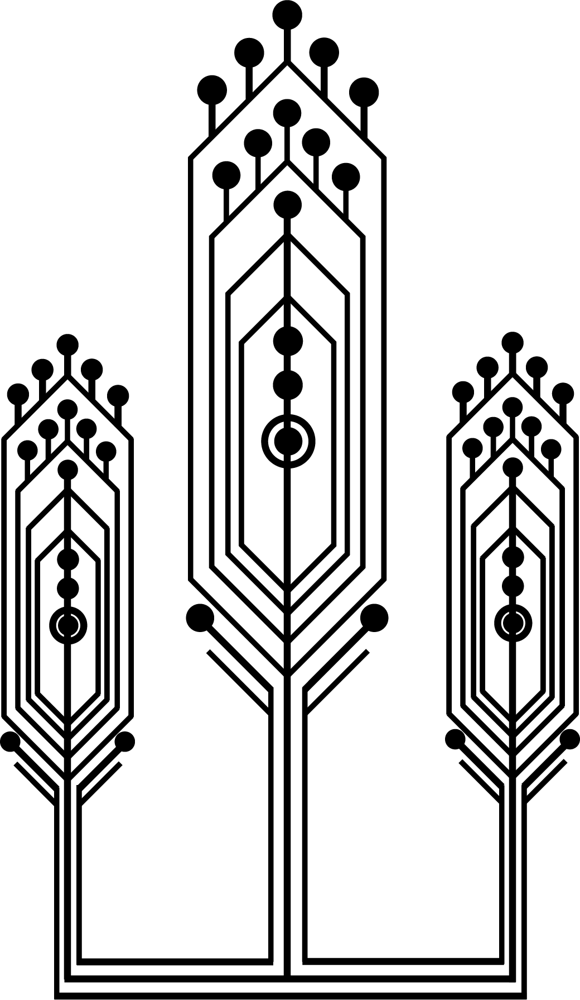
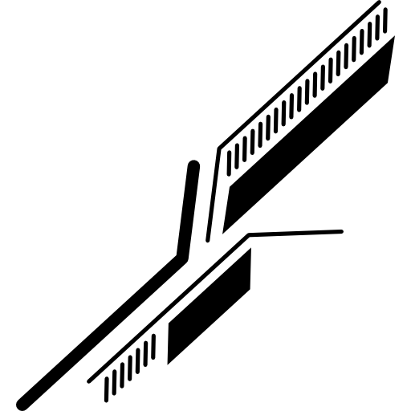
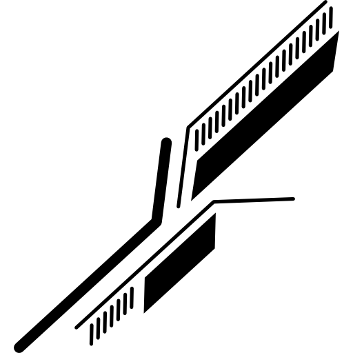
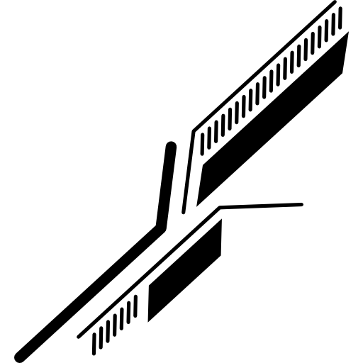
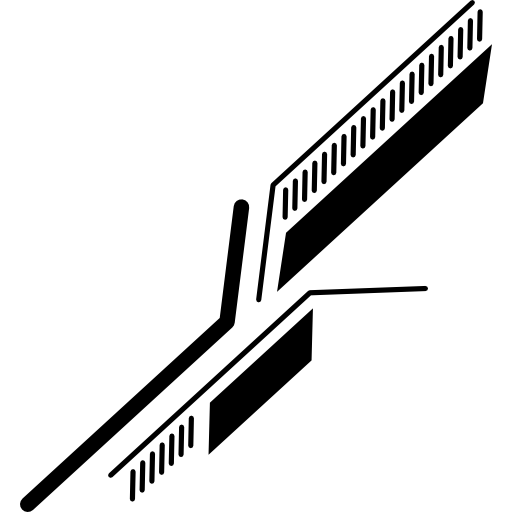

 




Em matemática e ciência da computação, um algoritmo é uma sequência finita de ações executáveis que visam obter uma solução para um determinado tipo de problema. Segundo Dasgupta, Papadimitriou e Vazirani; "Algoritmos são procedimentos precisos, não ambíguos, padronizados, eficientes e corretos.". As suas características são: finitas, o algoritmo deve eventualmente resolver o problema; bem definidas: os passos devem ser definidos de modo a serem entendidos; efetivas, deve sempre resolver o que tem para solucionar, antecipando falhas.
Um algoritmo não representa, necessariamente, um programa de computador, e sim os passos necessários para realizar uma tarefa. Sua implementação pode ser feita por um computador, por outro tipo de autômato ou mesmo por um ser humano. Diferentes algoritmos podem realizar a mesma tarefa usando um conjunto diferenciado de instruções em mais ou menos tempo, espaço ou esforço do que outros. Tal diferença pode ser reflexo da complexidade computacional aplicada, que depende de estruturas de dados adequadas ao algoritmo. Por exemplo, um algoritmo para se vestir pode especificar que você vista primeiro as meias e os sapatos antes de vestir a calça enquanto outro algoritmo especifica que você deve primeiro vestir a calça e depois as meias e os sapatos. Fica claro que o primeiro algoritmo é mais difícil de executar que o segundo apesar de ambos levarem ao mesmo resultado.
A algoritmia pode ser representada de diversas formas sendo algumas: fluxogramas, pseudocódigo e linguagem corrente.
O termo fluxograma designa uma representação gráfica de um determinado processo ou fluxo de trabalho, efetuado geralmente com recurso a figuras geométricas normalizadas e as setas unindo essas figuras geométricas. Através desta representação gráfica é possível compreender de forma rápida e fácil a transição de informações ou documentos entre os elementos que participam no processo em causa.
Exemplo de fluxograma que lê dois números e efetua a sua soma utilizando o Flowgorithm:
+351930608703